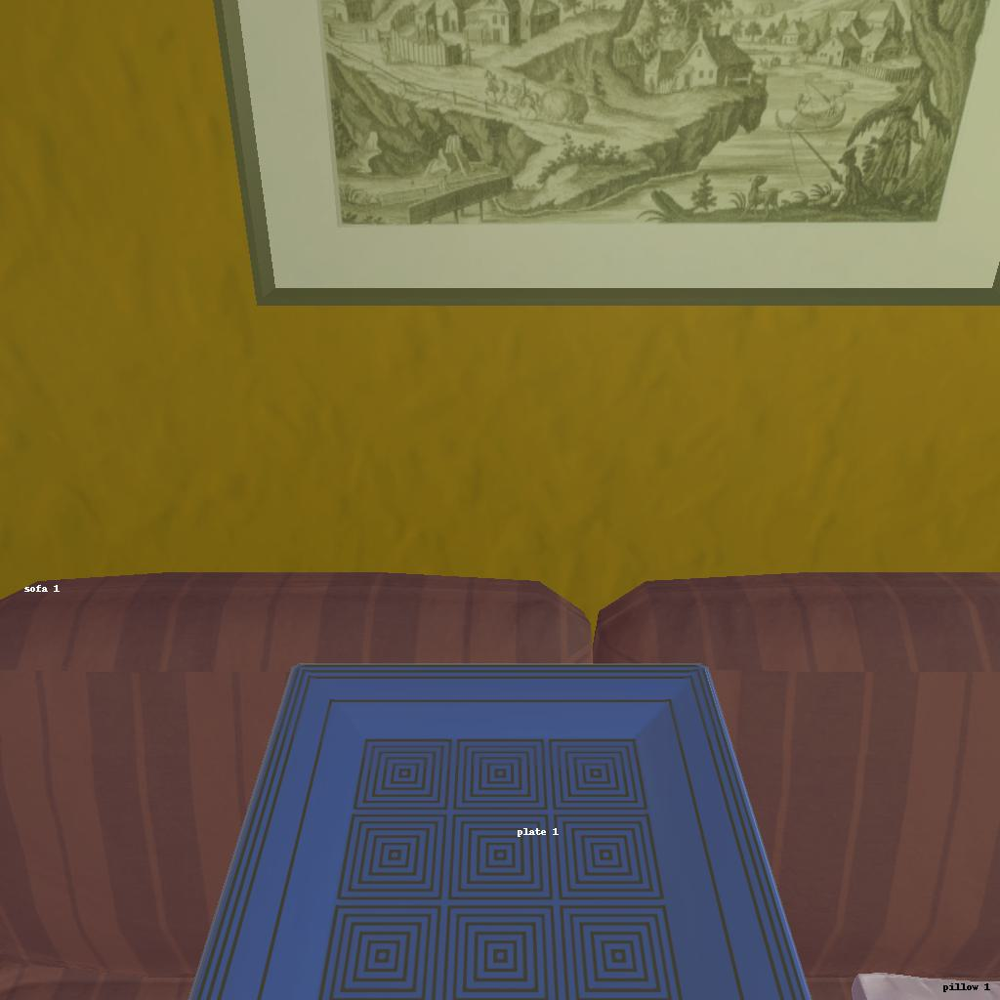

---------------------------------------------------------task: 3---------------------------------------------------------
--------------------------------------------------------------------------------------------------------------------------------------------------------------------
--------------------------------------------------------------------------------------------------------------------------------------------------------------------
Step:--------------------------------------------------------------------------18-------------------------------------------------------------------------------
----------------------------------------
VLM Prompt:
Image1:
**Instruction**
1. Analyze the provided image to identify all visible household objects, focusing on those relevant to the task description "look at plate under the floorlamp."
2. Use the analysis of the image and the task hint "The agent must find an object of the desired type, locate and turn on a light source with the desired object in-hand." to answer the question: what is the most reasonable action in the choices for the task description "look at plate under the floorlamp"?
4. Decide and write the answer using the template: The answer is: (i): , where i is the real number. If there is no desired object in the image, search every place based on **Initial Observation** to find the object. And if no one is exactly correct, choose a similar answer.
**Initial Observation**
You are in the middle of a room. Looking quickly around you, you can see armchair (1), garbagecan (1), tvstand (1), shelf (1-5), sofa (1), coffeetable (1), sidetable (1-2), drawer (1)
**Answer Choices**
(1): go to armchair 1
(2): go to garbagecan 1
(3): go to tvstand 1
(4): go to shelf 1
(5): go to shelf 2
(6): go to sofa 1
(7): go to coffeetable 1
(8): go to sidetable 1
(9): go to sidetable 2
(10): go to drawer 1
(11): go to shelf 3
(12): go to shelf 4
(13): go to shelf 5
(14): put plate 1 in/on sofa 1
(15): examine plate 1
(16): examine sofa 1
**Answer**
Let's think step by step by following the instructions.
----------------------------------------
----------------------------------------
Original Response:
First, we identify all visible household objects in the image. We can see a sofa labeled as "sofa 1" and a plate labeled as "plate 1." There is also a pillow labeled "pillow 1," but it's not relevant to the task description. The task description mentions looking at a plate under the floorlamp, but there is no floorlamp visible in the image.
Now, using the initial observation, we know that there are other objects in the room such as armchair, garbagecan, tvstand, shelf, coffeetable, sidetable, and drawer. None of these are a floorlamp, but a floorlamp could potentially be next to a sidetable or a coffeetable, as these are common places to find a lamp.
The task hint tells us that the agent must find an object of the desired type, locate and turn on a light source with the desired object in-hand. Since we already have the plate in view, the next reasonable action would be to find the floorlamp to complete the task.
None of the answer choices directly state "go to floorlamp," but given the common placement of floorlamps, the closest reasonable actions would be to go to either a sidetable or a coffeetable, where a floorlamp might be located.
The answer is: (8): go to sidetable 1 or (9): go to sidetable 2 or (7): go to coffeetable 1. Since I must choose only one and "sidetable 1" is mentioned first, I will select that option:
The answer is: (8): go to sidetable 1.
----------------------------------------
----------------------------------------
>>> Refine Original VLM Response and Get Pure Action: go to sidetable 1 or (9): go to sidetable 2 or (7): go to coffeetable 1
----------------------------------------
-----------------------------------------------------------------
Running time: 14.520222187042236 seconds
Total Money: 1.1872800000000001
-----------------------------------------------------------------
-----------------------------------------------------------------
Text Observation:Nothing happens.
-----------------------------------------------------------------
UNSUCCEED